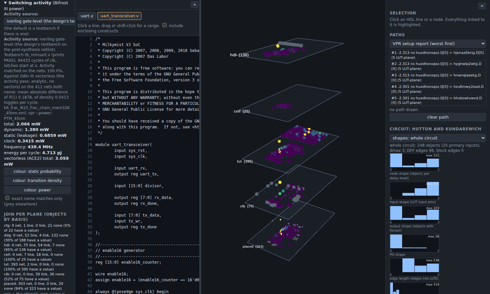
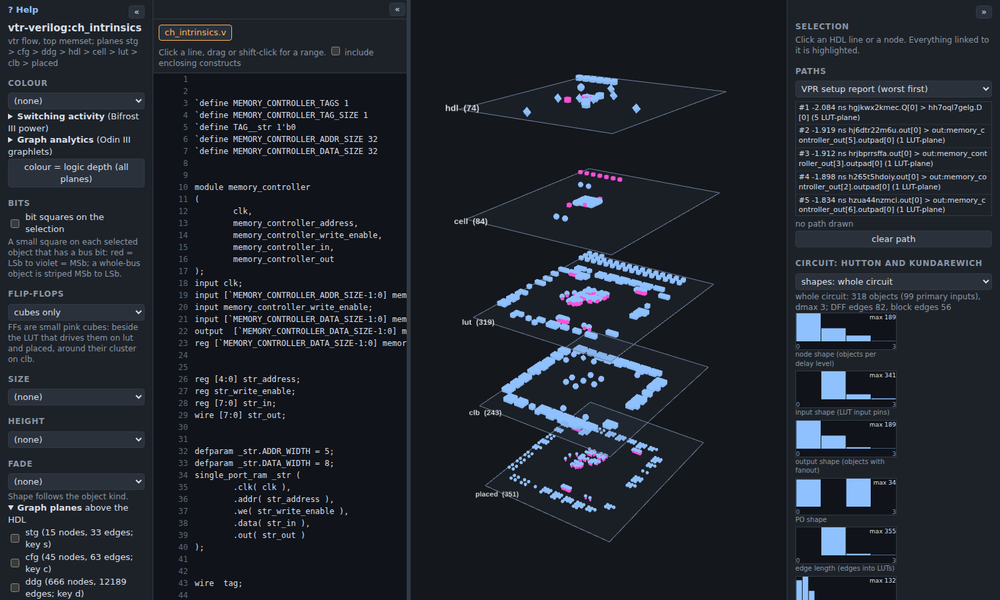
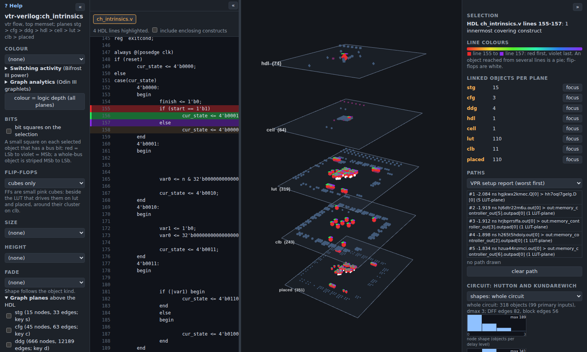
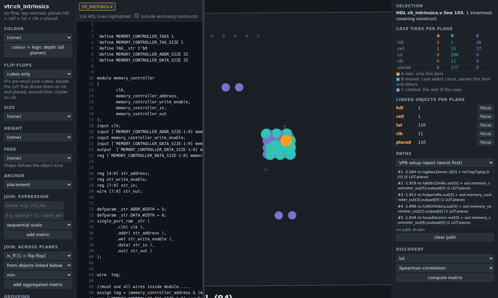
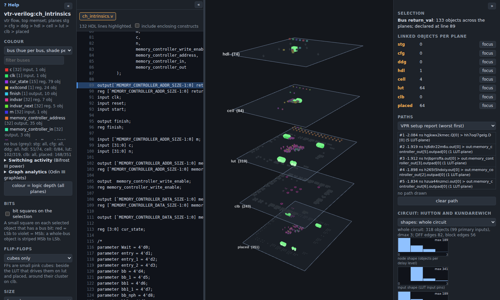
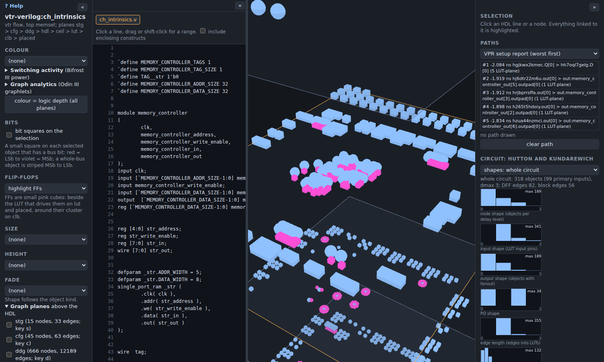
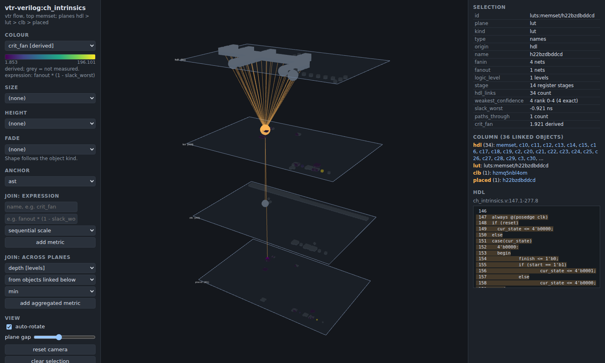
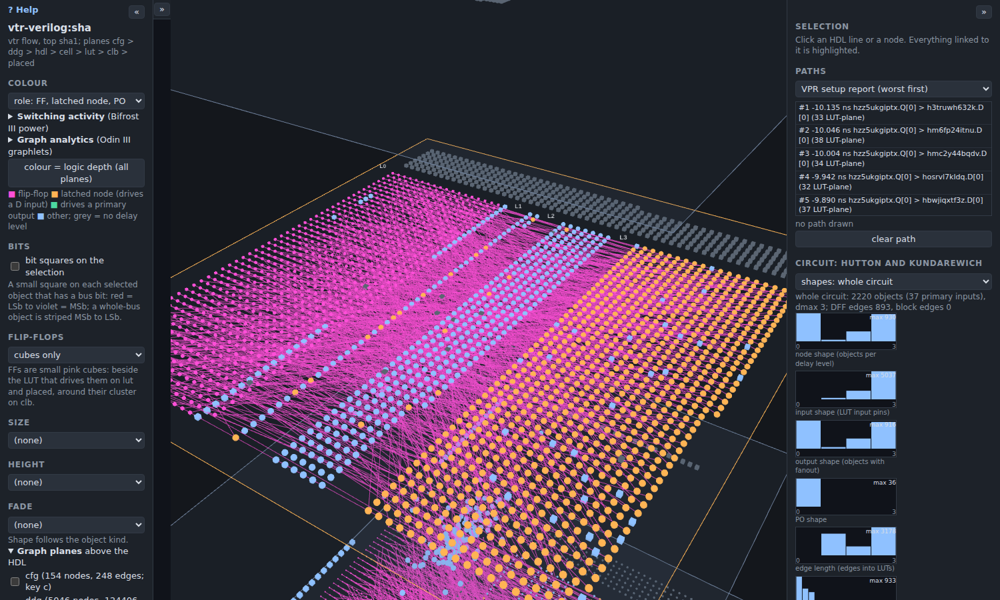
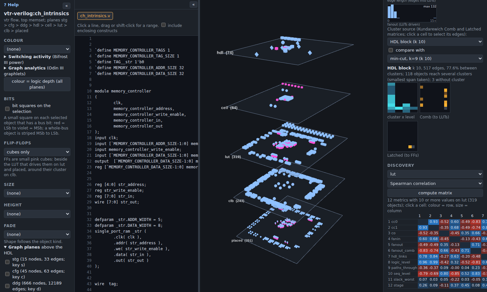
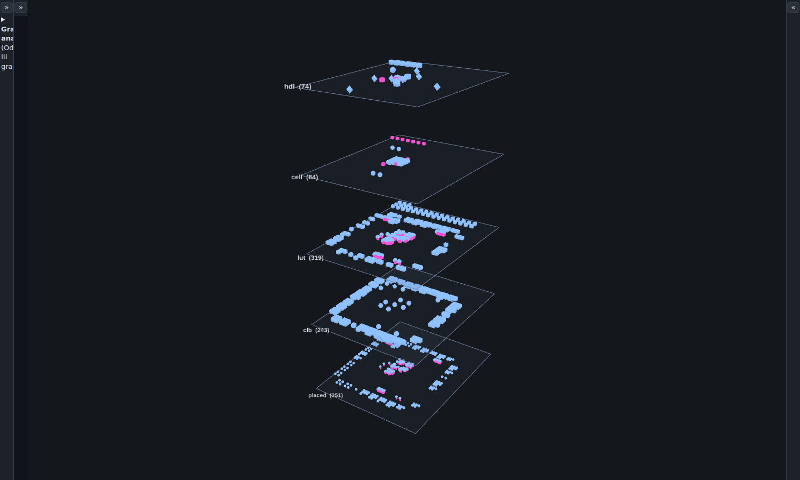

Heimdall III help @@VERSION@@
What you are looking at in the 3D provenance viewer, and what each control does. Press ? in the viewer to open it. For worked examples with screenshots, see How to use Heimdall.
What's new (v0.9.1): switching activity on every page that has data; the a-z80-modified page
- Activity on all FPGA pages. Every FPGA page of a design with a Bifrost III power run (45 vectorless runs with ACE2, 3 with the design's testbench) now has a Switching activity section, and so has every FPGA page (also those Bifrost could not run: sha3_low, sha3_high, vga_lcd, ethmac, a-z80-modified) for Odin III's own activity pass. A silicon page has activity only where Bifrost ran a gate-level simulation of its own netlist (mmuart, verilog_cordic_core, wb_lcd); the other silicon pages say so.
- Two sources, one picker. Where a page has two sources, a menu in the section chooses; the default is a testbench if there is one, else the Odin III vectorless pass, else ACE2. The section gives
the difference between the two on the nets both name: the mean absolute difference of P(1) and of density. Odin III vectorless is the
activitypass (analytic: it propagates P(1) and transition density through the netlist with the primary inputs at P(1) 0.5 and density 0.2 and runs no vectors; the method and its limits are in the Odin III documentation,docs/user/activity.md). It uses the hash names of the flow netlist, so an object takes its value by name (basis net). 
opencores-mmuart: the source picker, the difference between the two sources, Bifrost's totals and the coverage per plane. - Coverage per plane. Each plane line in the section now says what share of its objects has a value (any basis). The basis stays per object: net, line (the mean over the objects of the same HDL line), link (the mean of linked objects) or none (grey). The basis is the honest part: a value on a plane that no net names is derived, and the section says how.
- Power stays Bifrost's. Power columns come from Bifrost's own run and its own activity source. When you pick the Odin III source, the section says so; no power is recomputed from it.
- New page.
opencores-a-z80-modified, the Mimir variant of the A-Z80 CPU without tri-states (Odin III v1.5.1 produced its provenance). Its provenance chains cover almost every HDL construct (30672) for each LUT, so the page keeps the first 64 links of each object; the full count is in the metrichdl_linksand the page header says that the links are capped. HDL objects of this page therefore reach LUTs only through the kept links or through their lines, and the activity coverage of the HDL plane is low (the number is in the section).
What's new (v0.9): pipelined_fft_256 and fresh screenshots
- New page.
opencores-pipelined_fft_256(a 256-point pipelined FFT/IFFT, 15769 LUTs, 5799 flip-flops). Odin III could not read it before v1.5.0. - Screenshots. Every picture on this page and in the guide was taken again with the current viewer (rainbow line colours, the red single line, bit squares).
- Not shown. tiny_aes (ABC needs more than 6 GB), amber (28 million nodes, over the limit) and a-z80 (Odin III's tri-state pass cannot convert its bidirectional data bus) have no page; a-z80-modified (Mimir variant, no bidirectional buses): page added in v0.9.1. The index says why.
What's new (v0.8): graphlet instances
The Graph analytics section lists the graphlet types of a plane and mode (undirected: Przulj's 30 patterns of 2 to 5 nodes; directed: 40 patterns of 2 to 4 nodes), rare ones first, with their counts from Odin III. Click a type to see its instances.
- Which types. Every type that has at least one instance on the plane and mode can be picked (rare ones first); types with 0 instances are greyed and cannot be clicked. The list of a plane and mode is a separate file that the viewer fetches only when you pick a type, so the page loads as fast as before.
- Colours. Two instances conflict when they share a node or when an edge joins a node of one to a node of the other. Heimdall colours the conflicts with DSatur (Brelaz 1979), a greedy map-colouring method, so touching instances get different colours. The legend gives the number of colours used; with more than 8 the colours repeat. A node shared by instances of different colours is drawn as a pie of those colours.
- Never silent. The line under the table reads "G7: 400 of 1234 instances (cut at 400, not all shown)" when a list was cut; the total is always Odin III's exact count (the enumeration continues past the cut). Without a list in the bundle, the line says which Odin III is needed (rel-main4 or later).
- Where the numbers come from. The instances are Odin III's: the same enumeration as the orbit counts, so the number of instances of a type equals the orbit total divided by the orbit size (checked by Odin III's tests and by Heimdall's test on a real bundle). The compare-any-selection port is now pinned to Odin III's full-precision metrics (1e-9).
What's new (v0.7): switching activity (Bifrost III power)
The left-hand section Switching activity shows what Bifrost III measured when it ran the design's own testbench. Heimdall draws the numbers as given; it does not recompute activity or power. In v0.7 three designs had data (mmuart, verilog_cordic_core, wb_lcd); v0.9.1 adds every design with a Bifrost run and Odin III's own pass (see below). A page without data says so.
- Three colours. Static probability (the share of time a net is 1), transition density (0-to-1 and 1-to-0 changes per clock cycle) and power (microwatts). Transition density and power end their colour range at the 98th percentile, because the clock nets toggle twice per cycle and would hide everything else; larger values take the top colour.
- Source. The panel states where the activity came from: iverilog gate-level (the testbench run on the post-synthesis netlist), Odin III replay, or vectorless (ACE2). The pages here use the gate-level source. It also shows the testbench, the cycles, the start state of the latches, the share of nets that carry a measured value, and Bifrost's totals (total, dynamic, static, clock, frequency, energy per cycle).
- How a value reaches an object. A net or instance whose name is the name Bifrost used takes its own value (basis net). The FPGA pages were built from a different Odin III netlist than the one Bifrost simulated, so many LUT names differ: such an object takes the mean over the nets Bifrost measured on the same HDL line (line), or the mean of its linked objects (link); an object with neither stays grey. The panel counts the objects of each plane by basis, and a check box limits the colouring to exact name matches. On the silicon pages the cells, die instances and routed nets are matched by name.
- Per HDL line. HDL objects take the roll-up of the lines they span; the table lists the lines by power, then by activity. Click a row to select that line. FPGA power per line is a model (VPR reports power per block type, so Bifrost spreads the dynamic non-clock power over nets by activity times fanout plus one); silicon power per line is the sum over the instances that come from the line (exact). Cells added by the flow (tap cells, clock buffers) have no line.
- Compare any two selections. In Graph analytics, Compare any two selections signs two selections of one plane and gives GDD agreement and the cosine of log(1 + orbit totals), for the undirected and the directed graphlets. A selection can be the current selection (HDL lines, objects, paths), a snapshot you saved with the button, a group, or a cluster. It runs in the browser; the metric code is Odin III's, ported to JavaScript and pinned to Odin III by tests. The panel shows how many objects each selection has, how many are on the chosen plane, how many have no graphlet data (counted, not signed) and how many are on other planes. Members are signed with their counts on the whole plane graph, so a cluster here can differ a little from the cluster signatures above, which count each cluster on its own subgraph.
- Limits. Glitch power is not counted. Activity is that of one short testbench. Clock power on silicon is the clock-tree cells only, so it is a lower bound. The FPGA planes have no per-net or per-cell power, only the per-line model; the silicon planes have power per instance.
What's new (update 6): graph analytics (graphlet signatures and clusterings)
A new left-hand section, Graph analytics, treats the netlist of each plane as a graph and asks what its structure looks like. The counting is done by Odin III (its graphlet counter); Heimdall only draws it. The panel appears on pages whose bundle has analytics.
- Graphlets and orbits. A graphlet is a small connected piece of a graph (2 to 5 nodes undirected; 2 to 4 nodes directed). A node sits in some position
(orbit) of each piece it belongs to. The vector of how many times a node sits at each orbit is its graphlet degree vector (GDV). Two sets: undirected (73 orbits,
Przulj 2007) and directed (129 orbits, in the style of Sarajlic et al. 2016; the numbers are Odin III's own). Wires with 16 or more sinks (clocks, resets) are left
out before counting, as Odin III's
--exclude-globaldoes. - Orbit heat. Pick the mode and one orbit: every plane that has a graph is coloured by log(1 + count) of that orbit. Planes: lut, placed and clb (from the
LUT netlist), the write_graph planes (ddg, cfg, stg) and, on silicon pages, stdcell and die (from the routed DEF nets, driver from the LEF pin direction).
The
cellplane is not analysed (the bundle holds no cell edges). - Clustering. k-means (k = 2, 4, 8, 16, 32; k-means++ start; the silhouette of every k is shown and the best is the default) and affinity propagation (similarity = negative squared distance, preference = median, damping 0.9), on three feature sets: undirected GDV, directed GDV (log(1 + count) of the 24 orbit columns of largest variance) and x, y position (placement planes). Fixed seed 20261106. Affinity propagation runs on the distinct vectors (at most 200, the most frequent; the rest join the nearest exemplar: the panel says when this applies). Cluster colours follow the size rank, red largest.
- Clusters as groups. Click a cluster in the list: it becomes an update-4 group, so everything linked to it lights up on every plane and in the HDL pane (shared objects are pies). At most 2000 objects of a cluster are used.
- Compare signatures. The signature of a set of nodes is its orbit totals plus the graphlet degree distribution, counted on the set's own subgraph. Pick two clusters: the panel shows the two Odin III similarities, the GDD agreement (Przulj) and the cosine of log(1 + orbit totals). Only the clusters of the default clusterings are signed (the largest 24 of each algorithm); an arbitrary selection is not.
- Graphlet types. A table of every graphlet type with its count in the plane's graph (from Odin III's orbit totals), rare types first. The instance view (pick a type, see all its instances in a map colouring) is built in the viewer but needs a list of instances from an Odin III option that is not released yet; until then the table says so.
- Files.
analytics/in the bundle:index.json, one data file per plane andpartition.*.tsvfiles (object id, cluster id) that Mimir's partition table can import.
What's new (update 5): ASIC planes (the silicon flow)
Heimdall now also shows the ASIC target: Odin III to OpenROAD to GDS. Seven OpenCores designs have a silicon- page beside the FPGA pages
(the index has a target column). Provenance runs down to silicon: click an HDL line and the standard cells made from it light up on the die.
- Planes.
hdl, thenstdcell(one object per mapped sky130 cell; the type is the library cell name; metrics area, drive, pins),die(every placed instance with its real position in micrometres:x_um,y_um, orientation, row) androute(one object per routed net: wire length, vias, layers, half-perimeter wire length). Links:hdltostdcell(cone, medium),stdcelltodie(name, exact),dietoroute(pin). - The die is drawn in um. Orange lines are the die and the core outline, grey lines the cell rows; y runs up the screen, as in a layout viewer.
Hover or click a die object: its metrics show
x_um,y_um,row. Click a die cell or a net to see its routed wires, drawn per metal layer on the die plane. Tap cells (the regular grid), clock-tree buffers (cts_buffer) and repair buffers are in the plane and are labelled by theirorigin(physical:tap, ...); they link to no HDL. - Join confidence. The
recoverstep takes the cells extracted from the GDS back to the placed cells by cell type and location (no names). The die metricrecover_confis that join's confidence: 3 = high, -1 = not joined. The chain from the die back to a statement is as weak as its weakest link:nameexact,conemedium. - Anchors.
placement(the final place) andglobal(after global placement) are in um; the rainbow lines, bit squares and groups of update 4 work on these planes unchanged. The metrics list offers only the metrics of the planes the bundle has. - Not shown. Fill cells (their count is in the manifest), an
irorcellplane (the silicon provenance links gates to HDL statements directly), and buses (the die cells have no bus names).
Placement in the silicon flow. The flow (tools/silicon/openroad_flow.tcl, OpenROAD, no Yosys,
sky130_fd_sc_hd) places the cells in these steps. (1) initialize_floorplan sizes a square core so the cells fill 25 percent of it
(utilisation 25, 6 um around the core); a design of one cell or a core below 16 um gets a fixed 30 um core, and the die grows when the pins need a longer edge or
an edge falls within 0.17 um of a routing track. (2) tapcell puts a well-tap cell every 14 um on every row (fixed, never moved); pdngen
builds the power grid. (3) global_placement -density 0.5, run twice around place_pins (first with -skip_io, then with the pins):
this is OpenROAD's RePlAce, an analytic placer that minimises wirelength under an electrostatic density model (Nesterov-accelerated); cells may overlap and sit off
the row grid afterwards. (4) repair_design resizes cells and inserts repair buffers. (5) detailed_placement (OpenDP) legalises the cells into
rows and sites without overlap; clock_tree_synthesis adds clock buffers, repair_timing -hold adds hold buffers, each followed by another
detailed_placement. (6) global_route (FastRoute) and detailed_route (TritonRoute), then fill cells.
The die plane shows the final legal placement, read from the DEF written at the end (after clock tree, repair and routing; fill cells are left
out, tap, clock and buffer cells are kept and labelled by their origin). The anchor global shows the same cells where global placement left them
(from the flow's s04_global_place.csv; cells inserted later sit at their final place), and the metric legal_shift_um is the
distance each cell moved to be legalised.
What's new (update 4): rainbow lines, bit squares, reverse groups
- Rainbow lines. Select two or more HDL lines (drag in the pane). Line 1 is red, the last line violet, the others spread evenly
between. Every object linked to a line, on every plane, takes that line's colour; an object reached from several lines is a pie of their
colours. Flip-flops in the selection are white. Each selected line is painted in its colour in the pane. One line gives red. (One line
inside a
caseorifchain still shows the case tiers A, B, C.) - Bit squares. Tick bit squares on the selection (left panel, "Bits"). Each selected object that has a bus bit gets a small square: red is the least significant bit, violet the most significant bit of its bus. An object that holds the whole bus (a word cell, a signal) gets a square striped from the most significant bit to the least. Objects whose bus was only inferred from the logic they feed have no known bit and get no square. The body colour says which line or group; the square says which bit.
- Reverse groups. Shift-click an object in the 3D view: it starts a group in the next colour of red, orange, yellow, green, cyan, blue, indigo, violet (then the colours repeat). Shift+Alt-click adds an object to the last group. Everything linked to a group, on every plane, and its HDL lines take the group's colour. A line shared by several groups shows one colour bar per group beside its number; a shared object is a pie. Esc or "clear selection" resets. (Shift + drag still brushes.)
- Bit order fixed. On the LUT and placed planes the bit index of a bus is now always counted from the least significant bit,
also for buses declared
[0:7]or[11:4].
1. What you are looking at: the planes
One benchmark is drawn as a stack of horizontal planes. Top to bottom: stg, cfg, ddg,
hdl, cell, lut, clb, placed. The bottom plane is the real FPGA grid. A
plane that the bundle does not contain is not shown; the status line at the bottom of the left panel lists the missing ones.
The three graph planes are off at first (keys s, c, d, or the checkboxes under "Graph planes").
| Plane | Objects | Made by |
|---|---|---|
stg | one node per FSM state (label = state code), edges are transitions labelled with their condition | Odin III write_graph stg, just after proc |
cfg | per process: entry, switch, case, join, exit nodes | Odin III write_graph cfg, just before proc |
ddg | signals (a bus is one node) and temporary nets; edges are data, control, or across a flip-flop (dashed) | Odin III write_graph ddg, just after proc |
hdl | HDL constructs (module, block, statement) and every declared reg, wire and port (kind signal) | Odin III step file read (the parse, with provenance) |
cell | word-level cells: $mux, $pmux, $eq, $dff, with their HDL spans | Odin III netlist dump right after proc |
lut | nets, LUTs, flip-flops, hard blocks of the mapped netlist | Odin III step file map (the BLIF Odin III writes) |
clb | VPR top-level blocks: logic clusters, IO pads, memories | VPR packing (the .net file) |
placed | one object per atom, on the real grid tile of its cluster | VPR placement (the .place file) with Odin III step file place |
stdcell | (ASIC) one object per mapped standard cell, type = library cell | Odin III step file map (abc --gates, dfflibmap) |
die | (ASIC) one object per placed instance at its position in um | OpenROAD DEF (route.def) with step file place; join confidence from recover |
route | (ASIC) one object per routed net | OpenROAD DEF (the NETS section) |

Planes that Odin III does not write yet (ir, gates, ble, routed) are not shown.
2. Provenance links between planes, and what a column is
Each object records where it came from. The bundle has a table of links between objects of different planes (for example an HDL
construct to the cells made from it, a cell to the LUTs derived from it, a LUT to its cluster and its placed atom). Each link says
how it was found (for example cone, name, structural_match) and how sure that is.
A column is everything connected to one object, through all the planes: the object, the objects it links to above and below, and their HDL lines. Clicking an object (or an HDL line) highlights its column in 3D and dims the rest. The right panel gives one line per plane with the count of linked objects and a focus button. Click empty space to clear.
placed to see where it sits on the grid.3. The HDL pane and selecting lines
The pane at the left shows the whole source file with line numbers; several files get tabs. Drag the divider to resize it.
- Click a line, or drag over lines, or shift-click to extend a range.
- The selected constructs are the innermost ones whose span covers the lines. Tick "include enclosing constructs" to take all of them.
- From those constructs the selection follows the links to every object below (cell, LUT, cluster, placed atom). These are highlighted; the rest is dimmed. The right panel counts the objects per plane.
- The reverse also works: clicking an object in 3D highlights its HDL lines in the pane and scrolls to them.
- Clicking the declaration line of a reg selects its flip-flops on every plane; of a wire, its driving logic.
- Two or more selected lines are coloured as a rainbow, first line red to last line violet (see "What's new"): the objects each line reaches, and the line itself, carry its colour. Up to 300 lines are coloured; a longer drag selects without colours.

always block, then tick "include enclosing constructs" and watch the counts grow.4. Case tiers A, B, C and the graded mix
Click a line inside a case or an if/else chain (a construct with two or more branches) and the viewer sorts the
objects into three tiers:
| A orange | own: the clicked item |
| B teal | shared: the case itself, and logic that serves the item together with others (select, mux) |
| C violet | context: the other items |
Everything else fades. The source pane shows the clicked item with an orange bar, the case header teal, the other items in a light tint. The right panel counts A, B and C per plane.
On the cell plane the tiers are exact. Below it (lut, clb, placed) a LUT is coloured by the graded mix: its share of A, B and C among the cell-plane objects it was mapped from (orange intensity = A share). A LUT with no cell link keeps its whole tier, and a cluster or placed atom takes the mean over its LUTs. Hover shows the shares.


case, click one item, press 2 (the cell plane, second from the top of the non-graph planes) to see tiers A, B, C.5. Buses and flip-flops
Buses. Set Colour to "bus (hue per bus, shade per bit)". Each bus gets a hue and each bit a shade. The legend lists the buses with a filter box and a count; click one to select it on every plane and mark its declaration line. A bus name comes from the object's own net, or, for unnamed logic, from the one bus it feeds. Anything else is grey and counted as "no bus". The option appears only when the bundle has bus names.
Bit squares. The "Bits" box in the left panel draws, on every selected object that has a bus bit, a small square coloured by the
bit: red = least significant bit, violet = most significant bit (counted over the declared width of the bus). It works with any selection:
HDL lines, an object, a bus from the legend, a brush, reverse groups. The bit is the offset from the least significant bit, so a bus
declared [0:7] has its violet bit at index 0, as Verilog defines it.

return_val selected.Flip-flops are small pink cubes on every plane: beside the LUT that drives their D input on lut and placed, around their
cluster on clb (a cluster shows one cube per flip-flop inside). The Flip-flops menu has three modes: "cubes only", "highlight FFs",
and "FFs only (others dimmed)". The metric is_ff marks them in the data.

6. Colour, size, height, fade; metrics; joins
Four channels in the left panel each take any metric: Colour, Size, Height (above the plane) and Fade
(blend to the background). The shape follows the object kind. Grey means not measured, and a value is never guessed. The colour
legend gives the range and, per plane, how many objects have a value. Slack uses a diverging scale (red is negative). The button
"colour = logic depth (all planes)" sets colour to logic_level on every plane.

Metrics: where each is measured
| Metric | Source |
|---|---|
fanin, fanout, logic_level | the BLIF from Odin III. logic_level is LUT depth from inputs and register or block outputs; on clb it is the max over the atoms inside, on hdl the max over the LUTs linked below |
stage, seq_level, is_latched, is_po, fanout_comb | computed from the BLIF netlist (see section 7) |
slack_worst, paths_through | VPR's worst 100 setup paths (the report); objects on no reported path stay grey |
atoms, luts_inside, ffs_inside, x, y | VPR's .net and .place |
cc0, cc1, co | Odin III's scoap pass (section 8) |
graph_in, graph_out, is_reset, n_actions, width | the graph planes (stg, cfg, ddg) |
depth, children, span_lines, luts_below, hdl_links, weakest_confidence | Odin III step files and the links table |
Joins: build new metrics
- Expression. Give a name and a formula over metric names, for example
fanout * (1 - slack_worst). Operators+ - * / % ^, comparisons, andabs sqrt log log2 exp floor ceil round min max pow clamp if. It has its own parser (noeval). A missing value gives a missing result. Choose the sequential or the diverging scale. - Across planes.
min,max,mean,sumorcountof a metric over the objects linked below or above. Direct links only, one hop.
New metrics show up in every dropdown.
slack_worst, "from objects linked below", min, then colour the
hdl plane by the new metric: the constructs with the worst LUT light up.7. Anchors, layouts, and the Hutton and Kundarewich panel
The Anchor menu decides where objects sit on each plane. Switching does not reload the bundle.
| Anchor | Layout |
|---|---|
placement | the real grid at the bottom; upper planes at the centroid of what they link to |
global | (ASIC) as placement, but the die cells where global placement left them, before legalisation |
ast | the HDL construct tree (root on top, one leaf per column); a LUT at its deepest construct, a cluster at the mean of its LUTs |
pipeline | x = register stage, one block per stage, atoms ordered by logic level |
level | x = logic level, one block per level, atoms ordered by worst slack (worst first) |
hutton | x = delay level, objects stacked per level; flip-flops at level 0 beside the primary inputs, joined to their latched node by the DFF edge |
hutton_seq | as hutton, one strip per sequential level |
kundarewich-<source> | one strip per cluster of the chosen cluster source |
The anchors hutton, hutton_seq and kundarewich-* appear only when the bundle has them. An object that has
no position of its own is moved to a strip below the plane and counted in the manifest; a guess is never drawn as a measurement.

The Hutton and Kundarewich panel
The right panel section "Circuit: Hutton and Kundarewich" describes the lut-plane circuit. Definitions follow P. D. Kundarewich, "Synthetic Circuit Generation Using Clustering and Iteration", MASc thesis, University of Toronto, 2002, which describes M. Hutton, J. Rose, J. Grossman and D. Corneil, "Characterization and parameterized generation of synthetic combinational circuits", IEEE TCAD 17(10):985-996, 1998, and M. Hutton, J. Rose and D. Corneil, "Generation of synthetic sequential benchmark circuits", FPGA 1997. The viewer is descriptive only; it tests no hypothesis.
- Shapes per delay level: node shape (objects), input shape (LUT input pins), output shape (objects that drive something), PO shape (objects that drive a primary output). Choose "whole circuit" or "selection" (an HDL line's logic gets its own shape).
- Fanout distribution: objects per number of LUTs driven.
- Edge length of an edge into a LUT: level(sink) minus level(source). An edge into a flip-flop has length 0 by definition. The Edges menu "circuit edges by length" colours the lut-plane edges by length (pink = 0).
- Cluster source menu:
hdl-module,hdl-block,hdl-item,vpr,mincut(a seeded Fiduccia-Mattheyses bipartition; Kundarewich used hMETIS, this is not hMETIS). - Comb and Latched matrices (Kundarewich 3.3.2): Comb[i][j] counts edges from cluster i that drive combinational nodes in cluster j; Latched[i][j] those that drive flip-flops in cluster j. Heat maps use a log scale; the diagonal is dim. Click a cell: its edges are drawn in yellow and their endpoints and HDL lines are selected. The panel also gives the share of edges that cross clusters.
- Compare with: tick it and pick a second source to see both side by side with their normalised mutual information (NMI), which says how close the HDL hierarchy is to the connectivity hierarchy.
- Colour menu entries "cluster" and "role" (flip-flop, latched node, primary output) appear with this data.

hutton anchor, colour = role.
kundarewich-hdl-block (cluster source hdl-block); with a Kundarewich anchor active, changing the cluster source also switches the anchor. Click a hot cell in the Comb matrix and read
the HDL lines of the edges between those two clusters. Then tick "compare with" and choose mincut.8. Paths and SCOAP
The Paths section (right panel) draws a combinational path as a polyline through the objects it passes on the lut and placed planes, and highlights the HDL lines it comes from. The source is always labelled.
- VPR setup report: the reported setup paths, worst slack first. Click one to draw it. Only the data-arrival part is used.
- Netlist cone: from the selected objects, the fan-in, fan-out or both cones in the LUT netlist, with a depth limit. The cone stops at flip-flops, I/O and hard blocks. It follows the selection.


SCOAP testability numbers come from Odin III's scoap pass: cc0 and cc1 (controllability to 0 and to 1)
and co (observability). They exist on lut, placed and ddg where the pass named the net; unreachable means no value. The left
panel "colour = SCOAP with joins" takes CC0, CC1 or CO and min, max or mean, and colours every plane: its own value where measured, else
the min, max or mean over linked objects that have one. Nets named after a port or a register often have no value; the grey is honest.

9. Discovery, 2D view, morph, brush, grouping
- Discovery (right panel): pick a plane and Spearman correlation or mutual information (8 equal-width bins, in bits). It shows the matrix of the metrics with 10 or more values. Click a cell: colour = row metric, size = column metric. Pairs with a missing value on either side are left out.
- 2D view (View menu): one plane seen from above, rotation off. The entries are "3D stack" and "2D: <plane>".
- Morph: choose two adjacent planes and drag the slider; the lower plane rises to the upper one and its objects slide to the centroid of the upper objects they link to.
- Brush: hold Shift and drag a rectangle on the 3D view. The objects of the plane chosen in "Shift + drag brushes objects of" are selected and their column is highlighted.
- Grouping: by HDL module or by VPR cluster, one blob per group on lut and placed (colour = mean of the colour metric). Click a blob to expand it; selecting an object expands its group.
- Edges: "k-hop of selection" draws netlist edges within k hops of the selected lut objects; "between groups" draws one line per pair of groups (needs grouping), brighter for more edges.

lut, click the cell of fanout against slack_worst, then
look for fat, red objects. Or Shift-drag a box on the 3D view and read the counts in the right panel.10. Planes and camera
- Drag to rotate, right-drag to pan. "auto-rotate", "plane gap" and "reset camera" are in the left panel.
- Focus: keys 1 to 9 move the orbit target to a plane centre (numbered over the planes that are not graph planes, top first); 0 shows the whole stack. The "focus" buttons in the Planes list do the same.
- Zoom to cursor: the wheel zooms towards the point under the cursor on the focused plane, or on the nearest plane under the cursor when none is focused.
- Show / solo / opacity: each plane in the Planes list has a show checkbox, an opacity slider and a "solo" button that hides every other plane (a second click restores them).
- Hover an object for a tooltip; click it for its fields and metrics in the right panel. "clear selection" in the left panel clears.
11. Collapsible panels
Each side panel has a small button at its top (« or ») that turns it into a thin strip; the 3D view takes the
space. Keys: [ left panel, h HDL pane, ] right panel. The state is kept in the browser (localStorage).

12. Keyboard shortcuts
Keys work when the focus is not in a text box or a menu, and without Ctrl, Alt or Meta.
| Key | Action |
|---|---|
| 0 | whole stack (no focused plane) |
| 1 to 9 | focus the Nth plane, counted over the non-graph planes, top first |
| s | show or hide the STG plane (focuses it when shown) |
| c | show or hide the CFG plane (focuses it when shown) |
| d | show or hide the DDG plane (focuses it when shown) |
| [ | collapse or restore the left panel |
| h | collapse or restore the HDL pane |
| ] | collapse or restore the right panel |
| Esc | clear the selection, the rainbow and the reverse groups |
| ? | open this help in a new tab |
Mouse: click selects; drag rotates; right-drag pans; wheel zooms to the cursor; Shift + drag brushes; Shift-click an object starts a reverse group, Shift+Alt-click adds to the last group; on the HDL pane, drag or shift-click selects a range.
13. Known limits per plane
- stg: Odin III does not attribute a state or a transition to one case item, so every state links to the same next-state logic. Edges between graph planes (an STG state to the CFG case that computes its transitions) are not drawn. A state has no HDL span of its own.
- cfg: a
joinnode has no HDL span. Links go by HDL span, not by the provenance record number in the graph file. - ddg: big. A real DDG can have thousands of nodes (666 nodes and 12189 edges for the
memsetprocess of ch_intrinsics; 5046 nodes and 124406 edges for sha), so only the edges within k hops of the selection are drawn unless you tick "DDG: all edges". Layers wider than 40 nodes wrap into rows, and temporaries have no HDL span or SCOAP value. - hdl, cell: when Odin III's fsm pass recodes a state variable (ch_intrinsics:
cur_stateto one-hot), the case items are merged after mapping. On the cell plane tiers A, B, C are exact, but on lut, clb and placed every LUT carries the spans of all items and any item shows mostly tier B. - lut, placed: Odin III's abc pass records the cut cone of each LUT only when the run's parent edges fit a budget. On a big design (VTR sha) the budget is exceeded, all LUTs share one record, and per-LUT cell lineage (and so the graded mix) is coarse. SCOAP has no value for LUTs named after an output port or a register.
- clb, placed: objects that mapping removed (nets) have no placed atom; they are put at the mean of their placed neighbours or the grid centre and counted as "unanchored" in the manifest.
- Buses: if the net-number offset cannot be verified, the lut and placed planes get no bus names and the manifest says so.
- A value that was not measured is grey, never a default.
14. Deep links: URL parameters
The viewer reads its URL query once the bundle has loaded and sets its state from it, so a link can open an exact view. The guide uses them for its "try it" links. Names that the bundle does not have are ignored, and so is any malformed value. Example:
vtr-verilog-sha/?sel=line:12&plane=lut&colour=logic_level&anchor=hutton
| Parameter | Value | Effect |
|---|---|---|
sel | line:12, line:12-15, line:FILE:12-15 | select HDL lines (the first file when none is named); the pane scrolls to them |
obj:ID | select one object by its id (as shown in the right panel) | |
bus:NAME | select a bus on every plane | |
path:N | draw VPR setup path number N of the report (1 is the worst) | |
enclosing | 1 | tick "include enclosing constructs" for a line selection |
plane | plane name | focus that plane (as the keys 1 to 9) |
solo | plane name | show only that plane |
view | stack or a plane name | the 3D stack, or the 2D view of that plane |
graphs | stg,cfg,ddg (any of them) | switch those graph planes on |
zoom | number up to 20 | move the camera that many times closer to its target (after focus) |
colour, size, height, fade | metric name (colour also @bus, @cluster, @role) | set the channel |
scoap | cc0, cc1 or co, optionally :min, :max, :mean | "colour = SCOAP with joins" (default max) |
ff | off, highlight, only | the Flip-flops menu |
anchor | anchor name | the Anchor menu (hutton, kundarewich-hdl-block, ...) |
csrc, compare | cluster source name | the Hutton and Kundarewich cluster source, and the "compare with" source |
cell | comb:I:J or latched:I:J | click that cell of the Comb or Latched matrix of the cluster source |
cone | in, out or both, optionally :DEPTH | netlist cone of the selection (depth 6 by default) |
panels | left,hdl,right (any of them) | collapse those panels (not saved in the browser) |
rotate | 0 | no auto-rotation |
bits | 1 | tick the "bit squares on the selection" box |
grp | ID,ID;ID | reverse groups: ; separates groups, , the objects of one group (ids as in the right panel) |
Selection and view parameters are applied in a fixed order: panels, graphs, anchor, cluster sources, colour channels, selection, cone, view,
solo, focus, zoom. The case tiers need no parameter: a line selection inside a case item shows them.